DESIGN RESEARCH · 2026-07-16 · 设计辅助对话
网站巡游 — a field trip
一天里逛了 16 个网站:craft.do 本尊、四个摄影师作品集、一家摄影经纪、两家法国时装品牌、四本杂志的网站、两家工作室,截图全部存档在本文件夹的
img/ 里。
最重要的一条结论先说:咱们定下的「暖白卡纸」方向,被最好的那批网站集体验证了——craft、Lemaire、Cereal 三家的底色几乎是同一张纸。
一基准:craft.do 现在长什么样
数值真值早已扒好(在快照的「craft-真值」页里),这次补的是 2026 年 7 月的实景。
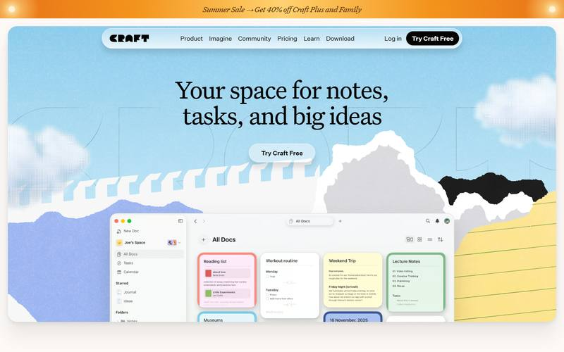
基准 BASELINE
- 首页现在整个是「撕纸拼贴」:撕边卡纸山脉、纸片云、横格纸黄块——比以前更像咱们的卡纸质感了
- 衬线大标题 66px、字重 400、字距 −1.98px:大而轻,不加粗——「高级编辑感」的做法
- 糖果色圆角卡(−2 档平涂色)仍是最有识别度的部件
- 悬浮胶囊导航:毛玻璃只有 blur(4px),圆角 26px——本页顶部的导航条就是照这个真值做的,你正看着它
可抄:大字轻字重的衬线标题;撕纸拼贴作为「卡纸」的进阶玩法;胶囊导航。
真值速查(全部来自快照里逐字扒的记录):底色 #fcf9f7,
墨色 #030302,
描边 9% 黑,圆角梯 10 / 16 / 24 / 32px,纸纹永远垫在卡片内部、浅底要用 multiply。
字体是商业零售字体 Untitled Sans/Serif,不碰,气质用咱们的 OFL 字体去够。
二逐站笔记
点截图可看整页长图。截图仅作内部研究参考,版权归各站所有。
摄影 · 让图说话
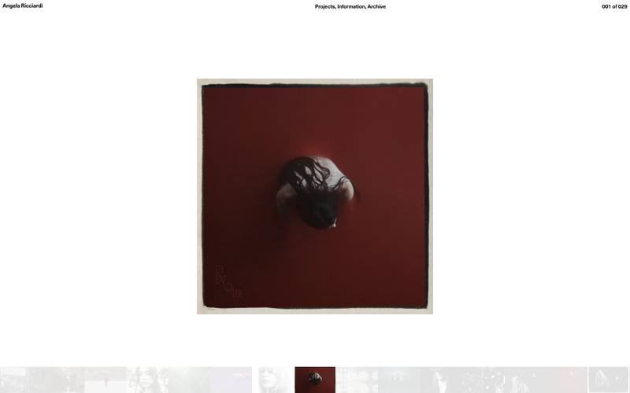
摄影 PHOTO
- 一屏一张图,底部一条「胶片带」缩略图,像在灯箱前看底片
- 导航三件套:左「名字」/ 中「栏目」/ 右「001 of 029」计数
可抄:计数式页码(001 of 029)——档案感一下就出来。
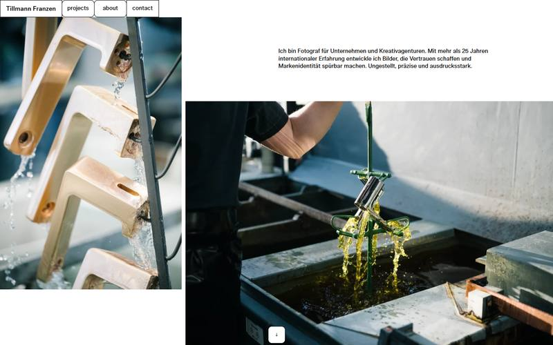
摄影 PHOTO
- 导航做成一排「实体标签页」,像卡片索引柜的抽头
- 双图错位排布:一张贴左缘、一张沉右下,中缝夹一段自我介绍
可抄:标签页导航(和卡纸是天生一对);图文错位的呼吸感。
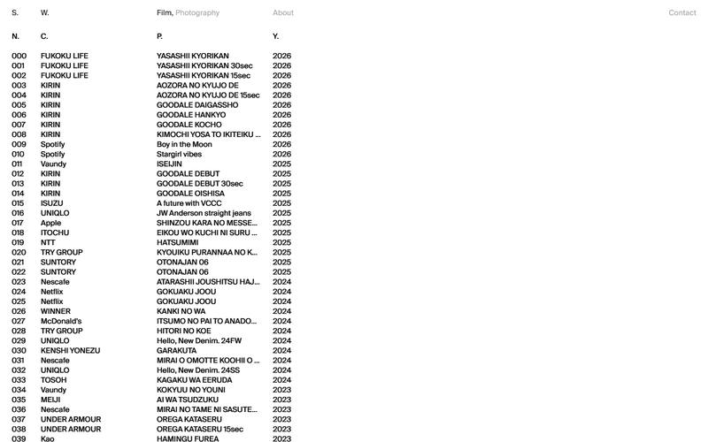
摄影 PHOTO
- 首页没有一张图:作品清单就是首页——编号 / 客户 / 项目 / 年份四列
- 000 起头的三位编号,列头缩写成 N. C. P. Y.,克制到极致
可抄:清单式首页——大胆、快、极有性格,适合作品多的人。
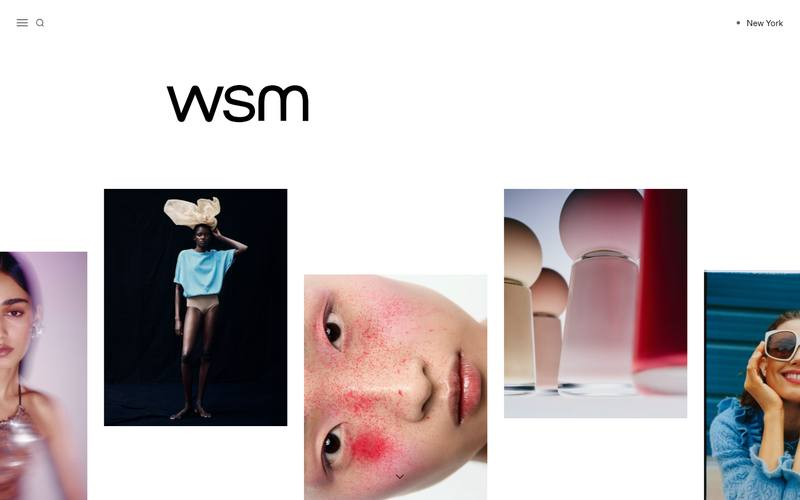
摄影经纪 AGENCY
- 五列图墙,列与列上下错开,两侧的图故意切出画面外
- 图注(摄影师 – 客户)压在图的下缘,小而低调
可抄:错落图墙 + 出血裁切——「还有更多」的暗示。
摄影 PHOTO
- 站方对机器人锁图,截图是空白的,但骨架看清了:居中大图 + 三段导航
- 栏目名用方括号写:[ SELECTED ] [ WORKS ] [ ABOUT ]——像相纸背面的铅笔标注
- 顶栏中间实时写着当前客户名(VOGUE GERMANY EDITORIAL)
可抄:方括号栏目名;当前内容的「片头字幕」。
服装 · 留白与飘浮
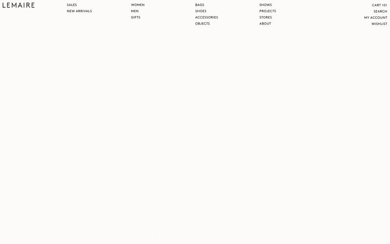
服装 FASHION
- 底色 #fdfbf9,又一张暖白纸;Logo 字距拉得很开
- 导航直接把全站地图平铺在页首,小号全大写,像杂志目录页
- 往下滚:图不排网格,东一张西一张地「飘」,配一个小小的品类词(PANTS / BAGS)
可抄:非对称飘浮排图——作品集不必是整齐的格子。
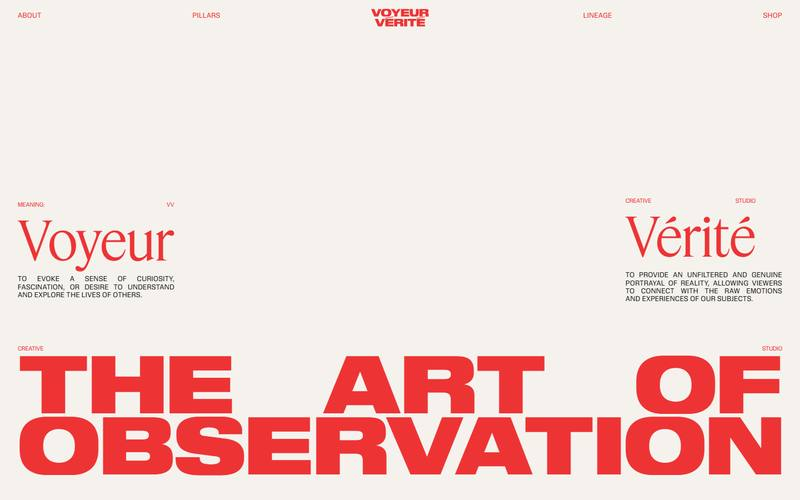
影像工作室 STUDIO
- 整站只有两个颜色:奶白纸 + 一支信号红
- 两种字在对唱:纤细优雅的衬线(Voyeur)对超重超扁的无衬线(THE ART OF OBSERVATION)
- 词典式排版:MEANING: 小标签 + 大词 + 释义小字
可抄:两个字体声部的对撞——咱们的 IM Fell(戏剧衬线)+ 文楷正是同一构造;词典式的自我介绍。
杂志 · 档案与性格
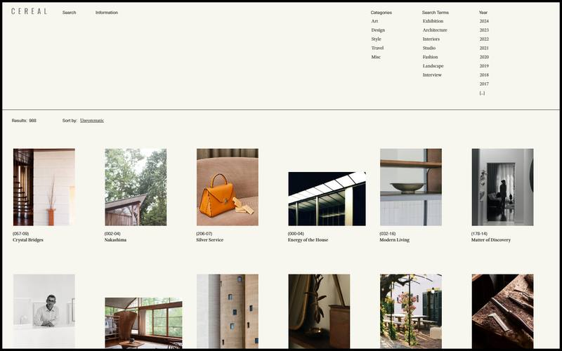
杂志 MAGAZINE
- 象牙底 #f7f6ef,一根细黑线框住整页——像杂志的裁切线
- 首页就是档案馆:分类 / 关键词 / 年份三列过滤器,988 条结果
- 每张图的图注带编号 (057-09) = 第几期第几页;排序方式写着「Unsystematic(不系统)」——性格藏在一个词里
可抄:整页细线边框;编号图注;把幽默感埋进功能文案。这是咱们「收藏」板块的头号范本。
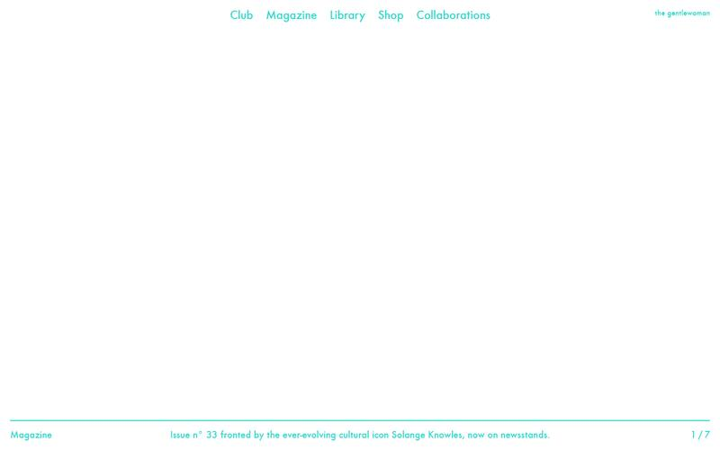
杂志 MAGAZINE
- 整屏封面轮播,图注和计数(1 / 7)收进底部一条细线里
- 全站只用一个字体(定制 Futura)+ 一个湖绿色,Logo 反常规放右上
可抄:底部细线图注条;「一个字体 + 一个颜色」的纪律。
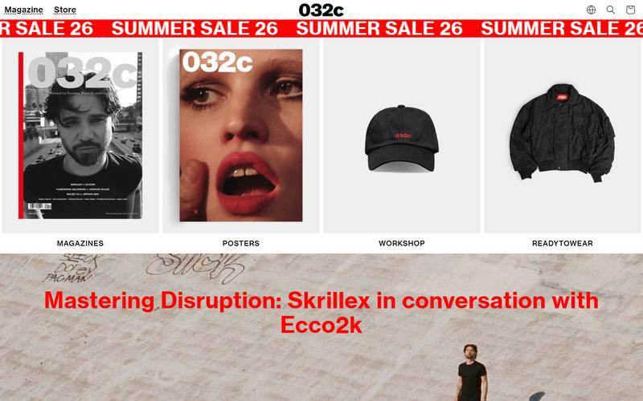
杂志 MAGAZINE
- 中性灰白底 + 一支侵略性的信号红,标题直接压在满幅图上
- 跑马灯促销条、杂志封面当商品卡——energy 拉满的反面教材式参考:热闹,但不是咱们的味
可抄:「品牌 = 一个红」的专一;其余留给对比参照。
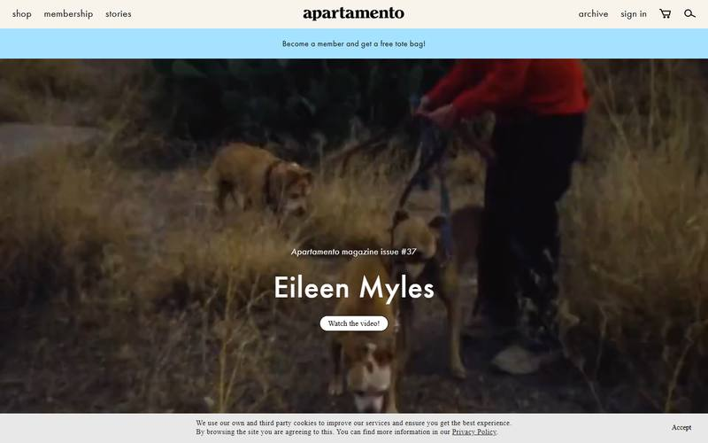
杂志 MAGAZINE
- 奶白页眉 + 全小写衬线 Logo,天蓝公告条一句话(送托特包!)——亲切、居家
- 全幅视频头图,居中衬线标题,气质在「杂志」和「朋友家」之间
可抄:顶部一句话公告条;全小写 Logo 的松弛感。
工作室与彩蛋
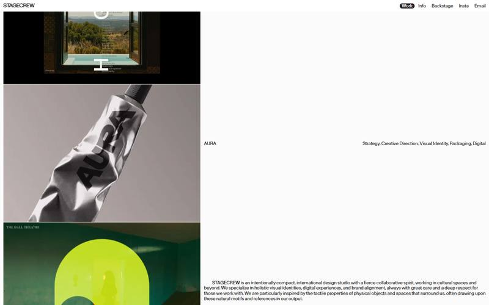
工作室 STUDIO
- 左半屏一列作品图,右半屏只放两行字:项目名靠左、职能清单靠右
- 当前栏目用一枚黑色药丸标记(Work)——最小成本的「你在这里」
可抄:项目名 × 职能左右对齐那一行;药丸式当前页标记。
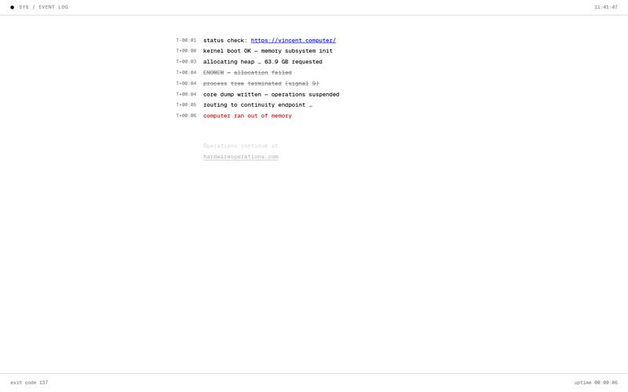
彩蛋 EASTER EGG
- 整个网站是一场戏:域名叫 computer,首页就演「电脑内存不足死机」的系统日志,最后一行红字把你送去新站
可抄:概念先行的勇气——个人网站可以是一个「装置」,不只是一份简历。
没拍到的两个:Jacquemus 当天整站维护中(改天再访);Fiona Vilmer 的证书被公司网络拦截。
另外两家(Julia Noni、Gentlewoman)对机器人锁图,拍到了骨架、拍不到图——上面已按骨架记录。
三五条横向规律
跨着看十几个站,反复出现的东西才值得信。
暖白不是巧合the warm-white consensus
craft、Lemaire、Cereal——产品站、时装屋、杂志——底色全落在同一张暖白纸上。纯白 #ffffff 只有摄影站在用(为了让照片的白边消失)。咱们的卡纸底色是被市场验证过的共识,放心走。
craft #fcf9f7Lemaire #fdfbf9Cereal #f7f6ef
图说话时,字闭嘴when images speak, type whispers
四个摄影师作品集全是一个配方:纯白底 + 15px 上下的中性无衬线 + 零装饰。他们用的全是商业字体(Suisse Intl、Neue Haas、Untitled Sans),咱们不碰——同样的「安静」气质,家底里的思源黑就够得着。规律本身更重要:作品页的字,退到几乎看不见才算合格。
档案感就是高级感the archive is the aesthetic
Cereal 把首页做成检索台,Satoshi Watanabe 把首页做成台账,Angela Ricciardi 给每张图配「001 of 029」的编号。把内容当档案来编目,克制又郑重,比任何装饰都显得认真。这套手法和霞鹜文楷的文人气质极配。
(057-09)001 of 029N. C. P. Y.Sort by: Unsystematic
两个声部的对撞two voices, one stage
Voyeur Vérité 用一支纤细衬线和一支超重无衬线对唱,craft 用轻盈大衬线配工整小无衬线。咱们手里已经握着同样的牌:IM Fell English(戏剧衬线)× 霞鹜文楷(温润楷书)——这次巡游确认这个配方在一线通用。
性格只花在一处spend personality once
Gentlewoman 全站只有一个湖绿,032c 只有一个信号红,craft 的花样全部集中在糖果卡上,其余部分全都素着。Cereal 的性格甚至只藏在一个词里(Unsystematic)。决定好咱们的「那一处」在哪,其他地方就都得守规矩。
四对咱们网站的落地建议
四类内容(作品集 / 自我介绍 / 文章 / 收藏)各自认领的范本。这些只是我的推荐,拍板在你。
| 板块 | 头号范本 | 怎么用 |
|---|
| 作品集 · 列表 | WSM / Lemaire | 错落图墙或非对称飘浮,拒绝死板网格;图注小而低调 |
| 作品集 · 详情 | Angela Ricciardi | 一屏一图 + 计数页码;文字退后,图占满呼吸 |
| 收藏 / 灵感 | Cereal | 档案索引式:过滤器 + 编号图注 + 一句藏性格的文案 |
| 文章 / 随笔 | Apartamento / craft | 暖白底窄栏,衬线大标题轻字重,正文霞鹜文楷 |
| 自我介绍 | Voyeur Vérité / Tillmann | 词典式开场(名字 + 释义),或左图右文的错位排布 |
| 首页 | craft 壳 + Satoshi 心 | 卡纸质感与胶囊导航打底,内容区可以大胆用清单/索引 |
| 导航 | Julia Noni / STAGECREW | 三段式(名字/栏目/状态),方括号或药丸标记当前页 |
双语提醒:巡游的站几乎全是纯拉丁字母排版,中文要自己拿捏——中文没有斜体、大小写、字重梯队也窄,
上面这些手法搬过来时,「大写小字」可以换成「加字距的小字」,「斜体」可以换成「楷体」。这正是文楷 + IM Fell 双声部的用武之地。
五设计类 skill(经验包)盘点
skill 是给我装的「工作方法」,装了以后我出的活儿更专业。安装要动项目配置,归辅助对话管。
| 名称 | 状态 | 是什么 |
|---|
| frontend-design | ✅ 已装 | Anthropic 官方出品:防「AI 味模板脸」,强调有主张的字体/配色/签名元素。这次报告就是按它的纪律写的 |
| dataviz | ✅ 已装 | 官方图表设计法:以后网站要放任何图表时用 |
| Owl-Listener/designer-skills | 可以装 | 一位设计师(Marie-Claire Dean)写的 63 个设计 skill + 27 条命令:用户调研、设计 token、案例集撰写、开发交接清单等,MIT 开源。想装的话让辅助对话执行 |
| travisvn/awesome-claude-skills | 目录 | skill 的「黄页」,以后缺什么去这里翻 |
{kind=link}
{kind=link}
{kind=link}
{kind=link}
{kind=link}
{kind=link}
{kind=link}
{kind=link}
{kind=link}
{kind=link}
{kind=link}
{kind=link}
{kind=link}